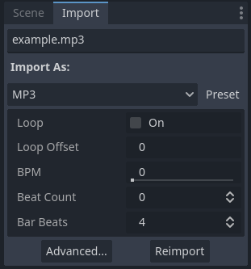
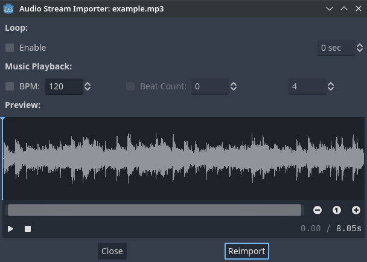
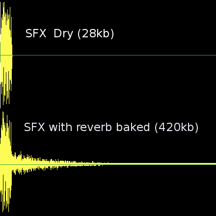

Import mẫu âm thanh
Các định dạng âm thanh được hỗ trợ
Godot cung cấp 3 lựa chọn để import dữ liệu âm thanh: WAV, Ogg Vorbis và MP3.
Mỗi định dạng có những ưu điểm khác nhau:
Tệp WAV dùng dữ liệu thô hoặc nén nhẹ (IMA ADPCM hoặc Quite OK Audio). Hiện tại chúng chỉ có thể được import ở định dạng thô, nhưng Godot cho phép nén sau khi import. Chúng nhẹ khi phát trên CPU (hàng trăm giọng đồng thời ở định dạng này vẫn ổn). Nhược điểm là chúng chiếm nhiều dung lượng đĩa.
Tệp Ogg Vorbis dùng cách nén mạnh hơn, cho kích thước tệp nhỏ hơn nhiều, nhưng cần nhiều sức xử lý hơn đáng kể để phát.
Tệp MP3 nén tốt hơn WAV với IMA ADPCM hoặc Quite OK Audio, nhưng kém hơn Ogg Vorbis. Điều này có nghĩa một tệp MP3 có chất lượng gần tương đương Ogg Vorbis sẽ lớn hơn đáng kể. Mặt tích cực là MP3 tốn ít CPU hơn để phát so với Ogg Vorbis.
Ghi chú
Nếu bạn đã biên dịch trình chỉnh sửa Godot từ mã nguồn với một số module bị tắt, một vài định dạng có thể không khả dụng.
Dưới đây là bảng so sánh kích thước tệp của 1 giây âm thanh với từng định dạng:
Định dạng |
1 giây âm thanh |
|---|---|
WAV 24-bit, 96 kHz, stereo |
576 KB |
WAV 16-bit, 44 kHz, mono |
88 KB |
WAV IMA ADPCM, 44 kHz, mono |
22 KB |
Quite OK Audio, 44 kHz, mono |
17 KB |
MP3 192 Kb/s, stereo |
24 KB |
Ogg Vorbis 128 Kb/s, stereo |
16 KB |
Ogg Vorbis 96 Kb/s, stereo |
12 KB |
Lưu ý rằng số liệu của MP3 và Ogg Vorbis có thể thay đổi tùy theo kiểu mã hóa. Số liệu trên dùng mã hóa CBR cho đơn giản, nhưng hầu hết tệp Ogg Vorbis và MP3 bạn tìm thấy trên mạng được mã hóa bằng VBR, hiệu quả hơn. Mã hóa VBR khiến kích thước thực tế của tệp âm thanh phụ thuộc vào mức độ "phức tạp" của âm thanh gốc.
Mẹo
Hãy cân nhắc dùng WAV cho các hiệu ứng âm thanh ngắn và lặp lại, và Ogg Vorbis cho nhạc, lời thoại và hiệu ứng âm thanh dài. MP3 hữu ích cho các dự án di động và web có tài nguyên CPU hạn chế, đặc biệt khi phát nhiều âm thanh nén cùng lúc (chẳng hạn âm thanh môi trường dài).
Import mẫu âm thanh
Có nhiều tùy chọn trong Import dock sau khi chọn một tệp WAV trong FileSystem dock:

Các tùy chọn import trong Import dock sau khi chọn một tệp WAV trong FileSystem dock
Bộ tùy chọn khả dụng sau khi chọn một tệp Ogg Vorbis hoặc MP3 thì khác:

Các tùy chọn import trong Import dock sau khi chọn một tệp MP3 trong FileSystem dock. Các tùy chọn giống hệt với tệp Ogg Vorbis.
Sau khi import một âm thanh, bạn có thể phát nó bằng các node AudioStreamPlayer, AudioStreamPlayer2D hoặc AudioStreamPlayer3D. Xem Audio stream để biết thêm thông tin.
Tùy chọn import (WAV)
Force > 8 Bit
Nếu được bật, buộc âm thanh đã import dùng lượng tử hóa 8-bit nếu tệp gốc là 16-bit trở lên.
Nhìn chung không nên bật tùy chọn này, vì lượng tử hóa 8-bit làm giảm chất lượng âm thanh đáng kể. Nếu bạn cần kích thước tệp nhỏ hơn, hãy cân nhắc dùng âm thanh Ogg Vorbis hoặc MP3.
Force > Mono
Nếu được bật, buộc âm thanh đã import thành mono nếu tệp gốc là stereo. Điều này giảm 50% kích thước tệp bằng cách gộp hai kênh thành một.
Force > Max Rate
Nếu đặt thành giá trị lớn hơn 0, buộc giảm tần số lấy mẫu của âm thanh xuống giá trị nhỏ hơn hoặc bằng giá trị chỉ định ở đây.
Điều này có thể giảm kích thước tệp đáng kể với một số âm thanh mà không ảnh hưởng đến chất lượng, tùy thuộc vào nội dung thực tế của âm thanh. Xem Thực hành tốt nhất để biết thêm thông tin.
Edit > Trim
Tệp âm thanh gốc có thể chứa những khoảng lặng dài ở đầu và/hoặc cuối. Những khoảng lặng này được các DAWs chèn vào khi lưu thành waveform, làm tăng kích thước không cần thiết và thêm độ trễ vào thời điểm chúng được phát.
Bật Trim sẽ tự động cắt bỏ phần đầu và cuối của âm thanh nếu nó thấp hơn -50 dB sau khi chuẩn hóa (xem Edit > Normalize bên dưới). Một khoảng fade-in/fade-out 500 mẫu cũng được dùng khi cắt để tránh tiếng bụp có thể nghe thấy.
Edit > Normalize
Nếu được bật, âm lượng sẽ được chuẩn hóa để âm lượng đỉnh bằng 0 dB. Khi bật, việc chuẩn hóa sẽ làm âm thanh to hơn tùy theo âm lượng đỉnh ban đầu.
Edit > Loop Mode
Không giống Ogg Vorbis và MP3, tệp WAV có thể chứa metadata cho biết chúng có lặp hay không (cùng với các điểm lặp). Theo mặc định, Godot sẽ tuân theo metadata này, nhưng bạn có thể chọn áp dụng một chế độ lặp cụ thể:
Detect from WAV: Dùng thông tin lặp từ metadata của WAV.
Disabled: Không lặp âm thanh, kể cả khi metadata cho biết tệp nên được phát lặp.
Forward: Lặp âm thanh tiêu chuẩn. Phát âm thanh xuôi từ đầu đến điểm kết thúc lặp, sau đó quay về điểm bắt đầu lặp và lặp lại.
Ping-Pong: Phát âm thanh xuôi đến điểm kết thúc lặp, sau đó phát ngược về điểm bắt đầu lặp, lặp lại chu kỳ này.
Backward: Phát âm thanh ngược từ điểm kết thúc lặp về điểm bắt đầu lặp, rồi lặp lại.
Khi chọn một trong các chế độ lặp Forward, Ping-Pong hoặc Backward, bạn cũng có thể định nghĩa điểm lặp để chỉ lặp một phần cụ thể của âm thanh. Loop Begin được đặt theo số mẫu tính từ đầu tệp âm thanh. Loop End cũng được đặt theo số mẫu tính từ đầu tệp âm thanh, nhưng sẽ dùng điểm cuối của tệp âm thanh nếu đặt thành -1.
Cảnh báo
Trong AudioStreamPlayer, signal finished sẽ không được phát ra với âm thanh lặp khi đến cuối tệp âm thanh, vì âm thanh sẽ tiếp tục phát vô thời hạn.
Compress > Mode
Có ba chế độ nén để chọn cho tệp WAV: PCM (Uncompressed), IMA ADPCM hoặc Quite OK Audio (mặc định). IMA ADPCM giảm kích thước tệp và mức dùng bộ nhớ một chút, đổi lại chất lượng giảm ở mức có thể nghe thấy. Quite OK Audio giảm kích thước tệp nhiều hơn IMA ADPCM một chút và chất lượng giảm ít đáng kể hơn nhiều, đổi lại mức dùng CPU cao hơn một chút (vẫn thấp hơn nhiều so với MP3).
Ogg Vorbis và MP3 không làm giảm chất lượng nhiều như vậy và có thể giảm kích thước tệp nhiều hơn, đổi lại mức dùng CPU cao hơn khi phát. Mức dùng CPU cao hơn này thường không phải vấn đề (đặc biệt với MP3), trừ khi phát hàng chục âm thanh nén cùng lúc trên nền tảng di động/web.
Tùy chọn import (Ogg Vorbis và MP3)
Loop
Nếu được bật, âm thanh sẽ bắt đầu phát lại từ đầu sau khi quá trình phát kết thúc do đã đến cuối âm thanh.
Cảnh báo
Trong AudioStreamPlayer, signal finished sẽ không được phát ra với âm thanh lặp khi đến cuối tệp âm thanh, vì âm thanh sẽ tiếp tục phát vô thời hạn.
Loop Offset
Loop offset xác định vị trí âm thanh bắt đầu lặp sau khi phát đến cuối âm thanh. Có thể dùng để chỉ lặp một phần của tệp âm thanh, hữu ích cho một số âm thanh môi trường hoặc nhạc. Giá trị được tính bằng giây so với đầu âm thanh, nên 0 sẽ lặp toàn bộ tệp âm thanh.
Chỉ có tác dụng nếu Loop được bật.
Một trình chỉnh sửa tiện lợi hơn cho Loop Offset được cung cấp trong hộp thoại Cài đặt import nâng cao, vì nó cho phép bạn xem trước thay đổi mà không cần import lại âm thanh.
BPM
Số nhịp mỗi phút (Beats Per Minute) của track âm thanh. Giá trị này nên khớp với số BPM đã dùng khi soạn track. Điều này chỉ liên quan đến nhạc muốn dùng tính năng nhạc tương tác, không áp dụng cho hiệu ứng âm thanh.
Một trình chỉnh sửa tiện lợi hơn cho BPM được cung cấp trong hộp thoại Cài đặt import nâng cao, vì nó cho phép bạn xem trước thay đổi mà không cần import lại âm thanh.
Beat Count
Số nhịp của track âm thanh. Điều này chỉ liên quan đến nhạc muốn dùng tính năng nhạc tương tác, không áp dụng cho hiệu ứng âm thanh.
Một trình chỉnh sửa tiện lợi hơn cho Beat Count được cung cấp trong hộp thoại Cài đặt import nâng cao, vì nó cho phép bạn xem trước thay đổi mà không cần import lại âm thanh.
Bar Beats
Số ô nhịp trong một nhịp của track âm thanh. Điều này chỉ liên quan đến nhạc muốn dùng tính năng nhạc tương tác, không áp dụng cho hiệu ứng âm thanh.
Một trình chỉnh sửa tiện lợi hơn cho Bar Beats được cung cấp trong hộp thoại Cài đặt import nâng cao, vì nó cho phép bạn xem trước thay đổi mà không cần import lại âm thanh.
Cài đặt import nâng cao (Ogg Vorbis và MP3)
Nếu bạn nhấp đúp vào một tệp Ogg Vorbis hoặc MP3 trong FileSystem dock (hoặc chọn Advanced… trong Import dock), bạn sẽ thấy một hộp thoại xuất hiện:

Hộp thoại nâng cao khi nhấp đúp vào một tệp Ogg Vorbis hoặc MP3 trong FileSystem dock
Hộp thoại này cho phép bạn chỉnh sửa điểm lặp của âm thanh với bản xem trước thời gian thực, cùng với BPM, beat count và bar beats. 3 cài đặt này được dùng cho nhạc tương tác, để chuyển tiếp mượt mà giữa các track nhạc khác nhau.
Ghi chú
Không giống tệp WAV, Ogg Vorbis và MP3 chỉ hỗ trợ điểm lặp "loop begin", không hỗ trợ điểm "loop end". Việc lặp cũng chỉ có thể là lặp xuôi tiêu chuẩn, không phải ping-pong hay ngược.
Thực hành tốt nhất
Dùng cài đặt chất lượng phù hợp
Mặc dù việc giữ nguồn âm thanh chất lượng nguyên bản là quan trọng nếu bạn đang chỉnh sửa, việc dùng cùng chất lượng đó trong dự án đã xuất là không cần thiết. Với tệp WAV, Godot cung cấp một số tùy chọn import để giảm kích thước tệp cuối cùng mà không sửa đổi tệp gốc trên đĩa.
Để giảm mức dùng bộ nhớ và kích thước tệp, hãy chọn mức lượng tử hóa, tần số lấy mẫu và số kênh phù hợp cho âm thanh của bạn:
Không có lợi ích nghe thấy được nào khi dùng âm thanh 24-bit, đặc biệt trong game nơi nhiều âm thanh thường phát cùng lúc (khiến khó cảm nhận từng âm thanh riêng lẻ).
Trừ khi bạn làm chậm âm thanh lúc chạy, không có lợi ích nghe thấy được nào khi dùng tần số lấy mẫu lớn hơn 48 kHz. Nếu bạn muốn giữ nguồn có tần số lấy mẫu cao hơn để chỉnh sửa, hãy dùng tùy chọn import Force > Max Rate để giới hạn tần số lấy mẫu của âm thanh đã import (chỉ khả dụng cho tệp WAV).
Nhiều hiệu ứng âm thanh nhìn chung có thể chuyển sang mono thay vì stereo. Nếu bạn muốn giữ nguồn stereo để chỉnh sửa, hãy dùng tùy chọn import Force > Mono để chuyển âm thanh đã import sang mono (chỉ khả dụng cho tệp WAV).
Giọng nói nhìn chung có thể chuyển sang mono, và cũng có thể giảm tần số lấy mẫu xuống 22 kHz mà không mất chất lượng đáng kể (trừ khi giọng rất cao). Đó là vì hầu hết giọng người không bao giờ vượt quá 11 kHz.
Dùng hiệu ứng âm thanh thời gian thực để giảm kích thước tệp
Godot có một hệ thống bus phong phú với các hiệu ứng tích hợp sẵn. Điều này giúp các nghệ sĩ SFX không cần thêm reverb vào hiệu ứng âm thanh, giảm kích thước đáng kể và đảm bảo cắt chính xác.

Như bạn thấy ở trên, hiệu ứng âm thanh trở nên lớn hơn nhiều về kích thước tệp khi thêm reverb.
Xem thêm
Mẫu âm thanh có thể được tải và lưu lúc chạy bằng tải và lưu tệp lúc chạy, kể cả từ một dự án đã xuất.